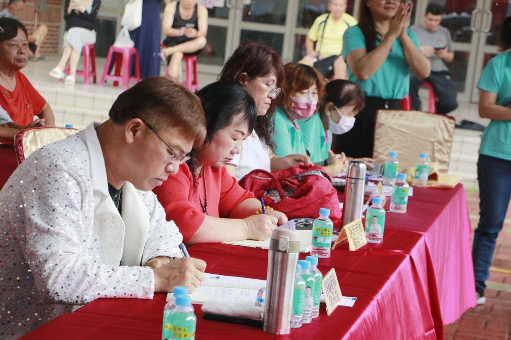
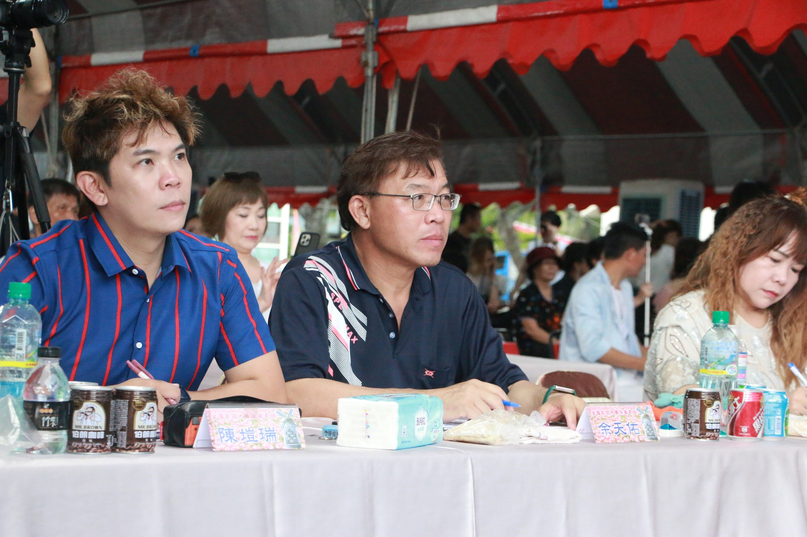

專業資歷
全國歌唱大賽冠軍，豐富評審與主持經歷
評審專業服務
評審足跡遍佈台灣中南部
以嘉義為核心，服務網絡擴及中南部四縣市
評審現場紀錄


東石漁人盃・嘉有好聲音・彰化縣長盃
評審經歷
- 東石漁人盃全國歌唱大賽評審
- 嘉義縣嘉有好聲音歌唱大賽評審
- 彰化縣長盃歌唱大賽評審
- 台南市議長盃全國歌唱大賽評審
- 台南市大聖盃全國歌唱大賽評審
- 彰化縣原住民歌唱大賽評審
- 台中新鎮盃歌唱大賽評審
14+
年評審經驗
4縣市
跨縣市服務
主持專業服務
主持服務遍佈台灣中南部
嘉義縣政府指定主持人，跨縣市政府活動主持
主持現場紀實


嘉義縣政府・東石鄉龍舟賽
主持經歷
- 嘉義縣政府指定主持人
- 縣長盃公務人員桌球賽主持
- 議長盃籃球賽主持
- 模範父母親頒獎典禮主持
- 台灣農機展活動主持
- 跨縣市政府活動主持
- 國際文化交流活動主持
50+
場主持經驗
6縣市
政府部門合作